GauGAN for conditional image generation
Author: Soumik Rakshit, Sayak Paul
Date created: 2021/12/26
Last modified: 2022/01/03
Description: Implementing a GauGAN for conditional image generation.

Introduction
In this example, we present an implementation of the GauGAN architecture proposed in Semantic Image Synthesis with Spatially-Adaptive Normalization. Briefly, GauGAN uses a Generative Adversarial Network (GAN) to generate realistic images that are conditioned on cue images and segmentation maps, as shown below (image source):

The main components of a GauGAN are:
- SPADE (aka spatially-adaptive normalization) : The authors of GauGAN argue that the more conventional normalization layers (such as Batch Normalization) destroy the semantic information obtained from segmentation maps that are provided as inputs. To address this problem, the authors introduce SPADE, a normalization layer particularly suitable for learning affine parameters (scale and bias) that are spatially adaptive. This is done by learning different sets of scaling and bias parameters for each semantic label.
- Variational encoder: Inspired by Variational Autoencoders, GauGAN uses a variational formulation wherein an encoder learns the mean and variance of a normal (Gaussian) distribution from the cue images. This is where GauGAN gets its name from. The generator of GauGAN takes as inputs the latents sampled from the Gaussian distribution as well as the one-hot encoded semantic segmentation label maps. The cue images act as style images that guide the generator to stylistic generation. This variational formulation helps GauGAN achieve image diversity as well as fidelity.
- Multi-scale patch discriminator : Inspired by the PatchGAN model, GauGAN uses a discriminator that assesses a given image on a patch basis and produces an averaged score.
As we proceed with the example, we will discuss each of the different components in further detail.
For a thorough review of GauGAN, please refer to this article. We also encourage you to check out the official GauGAN website, which has many creative applications of GauGAN. This example assumes that the reader is already familiar with the fundamental concepts of GANs. If you need a refresher, the following resources might be useful:
- Chapter on GANs from the Deep Learning with Python book by François Chollet.
- GAN implementations on keras.io:
* [Data efficient GANs](https://keras.io/examples/generative/gan_ada)
* [CycleGAN](https://keras.io/examples/generative/cyclegan)
* [Conditional GAN](https://keras.io/examples/generative/conditional_gan)
Data collection
We will be using the Facades dataset for training our GauGAN model. Let's first download it.
!wget https://drive.google.com/uc?id=1q4FEjQg1YSb4mPx2VdxL7LXKYu3voTMj -O facades_data.zip
!unzip -q facades_data.zip
--2024-01-11 22:46:32-- https://drive.google.com/uc?id=1q4FEjQg1YSb4mPx2VdxL7LXKYu3voTMj
Resolving drive.google.com (drive.google.com)... 64.233.181.138, 64.233.181.102, 64.233.181.100, ...
Connecting to drive.google.com (drive.google.com)|64.233.181.138|:443... connected.
HTTP request sent, awaiting response... 303 See Other
Location: https://drive.usercontent.google.com/download?id=1q4FEjQg1YSb4mPx2VdxL7LXKYu3voTMj [following]
--2024-01-11 22:46:32-- https://drive.usercontent.google.com/download?id=1q4FEjQg1YSb4mPx2VdxL7LXKYu3voTMj
Resolving drive.usercontent.google.com (drive.usercontent.google.com)... 108.177.112.132, 2607:f8b0:4001:c12::84
Connecting to drive.usercontent.google.com (drive.usercontent.google.com)|108.177.112.132|:443... connected.
HTTP request sent, awaiting response... 200 OK
Length: 26036052 (25M) [application/octet-stream]
Saving to: ‘facades_data.zip’
facades_data.zip 100%[===================>] 24.83M 94.3MB/s in 0.3s
2024-01-11 22:46:42 (94.3 MB/s) - ‘facades_data.zip’ saved [26036052/26036052]
Imports
import os
os.environ["KERAS_BACKEND"] = "tensorflow"
import numpy as np
import matplotlib.pyplot as plt
import tensorflow as tf
import keras
from keras import ops
from keras import layers
from glob import glob
Data splitting
PATH = "./facades_data/"
SPLIT = 0.2
files = glob(PATH + "*.jpg")
np.random.shuffle(files)
split_index = int(len(files) * (1 - SPLIT))
train_files = files[:split_index]
val_files = files[split_index:]
print(f"Total samples: {len(files)}.")
print(f"Total training samples: {len(train_files)}.")
print(f"Total validation samples: {len(val_files)}.")
Total samples: 378.
Total training samples: 302.
Total validation samples: 76.
Data loader
BATCH_SIZE = 4
IMG_HEIGHT = IMG_WIDTH = 256
NUM_CLASSES = 12
AUTOTUNE = tf.data.AUTOTUNE
def load(image_files, batch_size, is_train=True):
def _random_crop(
segmentation_map,
image,
labels,
crop_size=(IMG_HEIGHT, IMG_WIDTH),
):
crop_size = tf.convert_to_tensor(crop_size)
image_shape = tf.shape(image)[:2]
margins = image_shape - crop_size
y1 = tf.random.uniform(shape=(), maxval=margins[0], dtype=tf.int32)
x1 = tf.random.uniform(shape=(), maxval=margins[1], dtype=tf.int32)
y2 = y1 + crop_size[0]
x2 = x1 + crop_size[1]
cropped_images = []
images = [segmentation_map, image, labels]
for img in images:
cropped_images.append(img[y1:y2, x1:x2])
return cropped_images
def _load_data_tf(image_file, segmentation_map_file, label_file):
image = tf.image.decode_png(tf.io.read_file(image_file), channels=3)
segmentation_map = tf.image.decode_png(
tf.io.read_file(segmentation_map_file), channels=3
)
labels = tf.image.decode_bmp(tf.io.read_file(label_file), channels=0)
labels = tf.squeeze(labels)
image = tf.cast(image, tf.float32) / 127.5 - 1
segmentation_map = tf.cast(segmentation_map, tf.float32) / 127.5 - 1
return segmentation_map, image, labels
def _one_hot(segmentation_maps, real_images, labels):
labels = tf.one_hot(labels, NUM_CLASSES)
labels.set_shape((None, None, NUM_CLASSES))
return segmentation_maps, real_images, labels
segmentation_map_files = [
image_file.replace("images", "segmentation_map").replace("jpg", "png")
for image_file in image_files
]
label_files = [
image_file.replace("images", "segmentation_labels").replace("jpg", "bmp")
for image_file in image_files
]
dataset = tf.data.Dataset.from_tensor_slices(
(image_files, segmentation_map_files, label_files)
)
dataset = dataset.shuffle(batch_size * 10) if is_train else dataset
dataset = dataset.map(_load_data_tf, num_parallel_calls=AUTOTUNE)
dataset = dataset.map(_random_crop, num_parallel_calls=AUTOTUNE)
dataset = dataset.map(_one_hot, num_parallel_calls=AUTOTUNE)
dataset = dataset.batch(batch_size, drop_remainder=True)
return dataset
train_dataset = load(train_files, batch_size=BATCH_SIZE, is_train=True)
val_dataset = load(val_files, batch_size=BATCH_SIZE, is_train=False)
Now, let's visualize a few samples from the training set.
sample_train_batch = next(iter(train_dataset))
print(f"Segmentation map batch shape: {sample_train_batch[0].shape}.")
print(f"Image batch shape: {sample_train_batch[1].shape}.")
print(f"One-hot encoded label map shape: {sample_train_batch[2].shape}.")
# Plot a view samples from the training set.
for segmentation_map, real_image in zip(sample_train_batch[0], sample_train_batch[1]):
fig = plt.figure(figsize=(10, 10))
fig.add_subplot(1, 2, 1).set_title("Segmentation Map")
plt.imshow((segmentation_map + 1) / 2)
fig.add_subplot(1, 2, 2).set_title("Real Image")
plt.imshow((real_image + 1) / 2)
plt.show()
Segmentation map batch shape: (4, 256, 256, 3).
Image batch shape: (4, 256, 256, 3).
One-hot encoded label map shape: (4, 256, 256, 12).
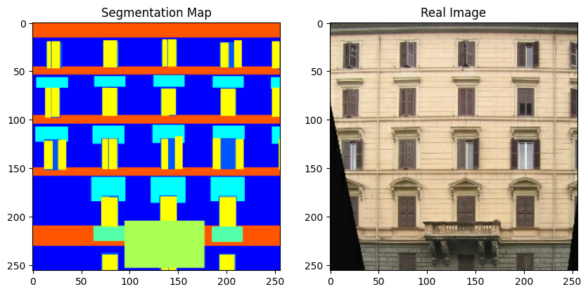
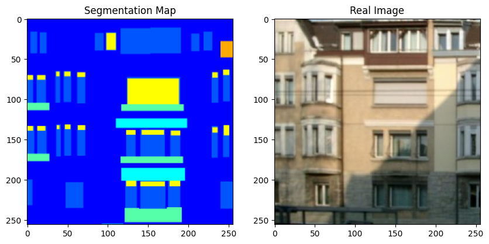
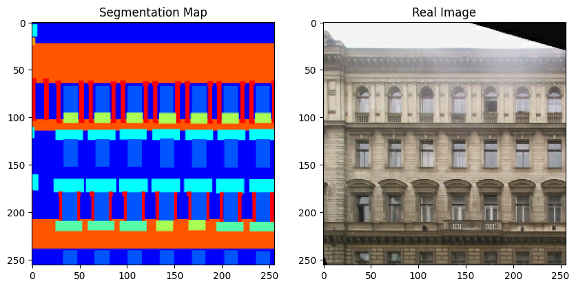
Note that in the rest of this example, we use a couple of figures from the original GauGAN paper for convenience.
Custom layers
In the following section, we implement the following layers:
- SPADE
- Residual block including SPADE
- Gaussian sampler
Some more notes on SPADE

SPatially-Adaptive (DE) normalization or SPADE is a simple but effective layer for synthesizing photorealistic images given an input semantic layout. Previous methods for conditional image generation from semantic input such as Pix2Pix (Isola et al.) or Pix2PixHD (Wang et al.) directly feed the semantic layout as input to the deep network, which is then processed through stacks of convolution, normalization, and nonlinearity layers. This is often suboptimal as the normalization layers have a tendency to wash away semantic information.
In SPADE, the segmentation mask is first projected onto an embedding space, and then
convolved to produce the modulation parameters γ and β. Unlike prior conditional
normalization methods, γ and β are not vectors, but tensors with spatial dimensions.
The produced γ and β are multiplied and added to the normalized activation
element-wise. As the modulation parameters are adaptive to the input segmentation mask,
SPADE is better suited for semantic image synthesis.
class SPADE(layers.Layer):
def __init__(self, filters, epsilon=1e-5, **kwargs):
super().__init__(**kwargs)
self.epsilon = epsilon
self.conv = layers.Conv2D(128, 3, padding="same", activation="relu")
self.conv_gamma = layers.Conv2D(filters, 3, padding="same")
self.conv_beta = layers.Conv2D(filters, 3, padding="same")
def build(self, input_shape):
self.resize_shape = input_shape[1:3]
def call(self, input_tensor, raw_mask):
mask = ops.image.resize(raw_mask, self.resize_shape, interpolation="nearest")
x = self.conv(mask)
gamma = self.conv_gamma(x)
beta = self.conv_beta(x)
mean, var = ops.moments(input_tensor, axes=(0, 1, 2), keepdims=True)
std = ops.sqrt(var + self.epsilon)
normalized = (input_tensor - mean) / std
output = gamma * normalized + beta
return output
class ResBlock(layers.Layer):
def __init__(self, filters, **kwargs):
super().__init__(**kwargs)
self.filters = filters
def build(self, input_shape):
input_filter = input_shape[-1]
self.spade_1 = SPADE(input_filter)
self.spade_2 = SPADE(self.filters)
self.conv_1 = layers.Conv2D(self.filters, 3, padding="same")
self.conv_2 = layers.Conv2D(self.filters, 3, padding="same")
self.learned_skip = False
if self.filters != input_filter:
self.learned_skip = True
self.spade_3 = SPADE(input_filter)
self.conv_3 = layers.Conv2D(self.filters, 3, padding="same")
def call(self, input_tensor, mask):
x = self.spade_1(input_tensor, mask)
x = self.conv_1(keras.activations.leaky_relu(x, 0.2))
x = self.spade_2(x, mask)
x = self.conv_2(keras.activations.leaky_relu(x, 0.2))
skip = (
self.conv_3(
keras.activations.leaky_relu(self.spade_3(input_tensor, mask), 0.2)
)
if self.learned_skip
else input_tensor
)
output = skip + x
return output
class GaussianSampler(layers.Layer):
def __init__(self, batch_size, latent_dim, **kwargs):
super().__init__(**kwargs)
self.batch_size = batch_size
self.latent_dim = latent_dim
self.seed_generator = keras.random.SeedGenerator(1337)
def call(self, inputs):
means, variance = inputs
epsilon = keras.random.normal(
shape=(self.batch_size, self.latent_dim),
mean=0.0,
stddev=1.0,
seed=self.seed_generator,
)
samples = means + ops.exp(0.5 * variance) * epsilon
return samples
Next, we implement the downsampling block for the encoder.
def downsample(
channels,
kernels,
strides=2,
apply_norm=True,
apply_activation=True,
apply_dropout=False,
):
block = keras.Sequential()
block.add(
layers.Conv2D(
channels,
kernels,
strides=strides,
padding="same",
use_bias=False,
kernel_initializer=keras.initializers.GlorotNormal(),
)
)
if apply_norm:
block.add(layers.GroupNormalization(groups=-1))
if apply_activation:
block.add(layers.LeakyReLU(0.2))
if apply_dropout:
block.add(layers.Dropout(0.5))
return block
The GauGAN encoder consists of a few downsampling blocks. It outputs the mean and variance of a distribution.

def build_encoder(image_shape, encoder_downsample_factor=64, latent_dim=256):
input_image = keras.Input(shape=image_shape)
x = downsample(encoder_downsample_factor, 3, apply_norm=False)(input_image)
x = downsample(2 * encoder_downsample_factor, 3)(x)
x = downsample(4 * encoder_downsample_factor, 3)(x)
x = downsample(8 * encoder_downsample_factor, 3)(x)
x = downsample(8 * encoder_downsample_factor, 3)(x)
x = layers.Flatten()(x)
mean = layers.Dense(latent_dim, name="mean")(x)
variance = layers.Dense(latent_dim, name="variance")(x)
return keras.Model(input_image, [mean, variance], name="encoder")
Next, we implement the generator, which consists of the modified residual blocks and upsampling blocks. It takes latent vectors and one-hot encoded segmentation labels, and produces new images.

With SPADE, there is no need to feed the segmentation map to the first layer of the generator, since the latent inputs have enough structural information about the style we want the generator to emulate. We also discard the encoder part of the generator, which is commonly used in prior architectures. This results in a more lightweight generator network, which can also take a random vector as input, enabling a simple and natural path to multi-modal synthesis.
def build_generator(mask_shape, latent_dim=256):
latent = keras.Input(shape=(latent_dim,))
mask = keras.Input(shape=mask_shape)
x = layers.Dense(16384)(latent)
x = layers.Reshape((4, 4, 1024))(x)
x = ResBlock(filters=1024)(x, mask)
x = layers.UpSampling2D((2, 2))(x)
x = ResBlock(filters=1024)(x, mask)
x = layers.UpSampling2D((2, 2))(x)
x = ResBlock(filters=1024)(x, mask)
x = layers.UpSampling2D((2, 2))(x)
x = ResBlock(filters=512)(x, mask)
x = layers.UpSampling2D((2, 2))(x)
x = ResBlock(filters=256)(x, mask)
x = layers.UpSampling2D((2, 2))(x)
x = ResBlock(filters=128)(x, mask)
x = layers.UpSampling2D((2, 2))(x)
x = keras.activations.leaky_relu(x, 0.2)
output_image = keras.activations.tanh(layers.Conv2D(3, 4, padding="same")(x))
return keras.Model([latent, mask], output_image, name="generator")
The discriminator takes a segmentation map and an image and concatenates them. It then predicts if patches of the concatenated image are real or fake.

def build_discriminator(image_shape, downsample_factor=64):
input_image_A = keras.Input(shape=image_shape, name="discriminator_image_A")
input_image_B = keras.Input(shape=image_shape, name="discriminator_image_B")
x = layers.Concatenate()([input_image_A, input_image_B])
x1 = downsample(downsample_factor, 4, apply_norm=False)(x)
x2 = downsample(2 * downsample_factor, 4)(x1)
x3 = downsample(4 * downsample_factor, 4)(x2)
x4 = downsample(8 * downsample_factor, 4, strides=1)(x3)
x5 = layers.Conv2D(1, 4)(x4)
outputs = [x1, x2, x3, x4, x5]
return keras.Model([input_image_A, input_image_B], outputs)
Loss functions
GauGAN uses the following loss functions:
- Generator:
* Expectation over the discriminator predictions.
* [KL divergence](https://en.wikipedia.org/wiki/Kullback%E2%80%93Leibler_divergence)
for learning the mean and variance predicted by the encoder.
* Minimization between the discriminator predictions on original and generated
images to align the feature space of the generator.
* [Perceptual loss](https://arxiv.org/abs/1603.08155) for encouraging the generated
images to have perceptual quality.
- Discriminator:
def generator_loss(y):
return -ops.mean(y)
def kl_divergence_loss(mean, variance):
return -0.5 * ops.sum(1 + variance - ops.square(mean) - ops.exp(variance))
class FeatureMatchingLoss(keras.losses.Loss):
def __init__(self, **kwargs):
super().__init__(**kwargs)
self.mae = keras.losses.MeanAbsoluteError()
def call(self, y_true, y_pred):
loss = 0
for i in range(len(y_true) - 1):
loss += self.mae(y_true[i], y_pred[i])
return loss
class VGGFeatureMatchingLoss(keras.losses.Loss):
def __init__(self, **kwargs):
super().__init__(**kwargs)
self.encoder_layers = [
"block1_conv1",
"block2_conv1",
"block3_conv1",
"block4_conv1",
"block5_conv1",
]
self.weights = [1.0 / 32, 1.0 / 16, 1.0 / 8, 1.0 / 4, 1.0]
vgg = keras.applications.VGG19(include_top=False, weights="imagenet")
layer_outputs = [vgg.get_layer(x).output for x in self.encoder_layers]
self.vgg_model = keras.Model(vgg.input, layer_outputs, name="VGG")
self.mae = keras.losses.MeanAbsoluteError()
def call(self, y_true, y_pred):
y_true = keras.applications.vgg19.preprocess_input(127.5 * (y_true + 1))
y_pred = keras.applications.vgg19.preprocess_input(127.5 * (y_pred + 1))
real_features = self.vgg_model(y_true)
fake_features = self.vgg_model(y_pred)
loss = 0
for i in range(len(real_features)):
loss += self.weights[i] * self.mae(real_features[i], fake_features[i])
return loss
class DiscriminatorLoss(keras.losses.Loss):
def __init__(self, **kwargs):
super().__init__(**kwargs)
self.hinge_loss = keras.losses.Hinge()
def call(self, y, is_real):
return self.hinge_loss(is_real, y)
* [Hinge loss](https://en.wikipedia.org/wiki/Hinge_loss).
GAN monitor callback
Next, we implement a callback to monitor the GauGAN results while it is training.
class GanMonitor(keras.callbacks.Callback):
def __init__(self, val_dataset, n_samples, epoch_interval=5):
self.val_images = next(iter(val_dataset))
self.n_samples = n_samples
self.epoch_interval = epoch_interval
self.seed_generator = keras.random.SeedGenerator(42)
def infer(self):
latent_vector = keras.random.normal(
shape=(self.model.batch_size, self.model.latent_dim),
mean=0.0,
stddev=2.0,
seed=self.seed_generator,
)
return self.model.predict([latent_vector, self.val_images[2]])
def on_epoch_end(self, epoch, logs=None):
if epoch % self.epoch_interval == 0:
generated_images = self.infer()
for _ in range(self.n_samples):
grid_row = min(generated_images.shape[0], 3)
f, axarr = plt.subplots(grid_row, 3, figsize=(18, grid_row * 6))
for row in range(grid_row):
ax = axarr if grid_row == 1 else axarr[row]
ax[0].imshow((self.val_images[0][row] + 1) / 2)
ax[0].axis("off")
ax[0].set_title("Mask", fontsize=20)
ax[1].imshow((self.val_images[1][row] + 1) / 2)
ax[1].axis("off")
ax[1].set_title("Ground Truth", fontsize=20)
ax[2].imshow((generated_images[row] + 1) / 2)
ax[2].axis("off")
ax[2].set_title("Generated", fontsize=20)
plt.show()
Subclassed GauGAN model
Finally, we put everything together inside a subclassed model (from tf.keras.Model)
overriding its train_step() method.
class GauGAN(keras.Model):
def __init__(
self,
image_size,
num_classes,
batch_size,
latent_dim,
feature_loss_coeff=10,
vgg_feature_loss_coeff=0.1,
kl_divergence_loss_coeff=0.1,
**kwargs,
):
super().__init__(**kwargs)
self.image_size = image_size
self.latent_dim = latent_dim
self.batch_size = batch_size
self.num_classes = num_classes
self.image_shape = (image_size, image_size, 3)
self.mask_shape = (image_size, image_size, num_classes)
self.feature_loss_coeff = feature_loss_coeff
self.vgg_feature_loss_coeff = vgg_feature_loss_coeff
self.kl_divergence_loss_coeff = kl_divergence_loss_coeff
self.discriminator = build_discriminator(self.image_shape)
self.generator = build_generator(self.mask_shape)
self.encoder = build_encoder(self.image_shape)
self.sampler = GaussianSampler(batch_size, latent_dim)
self.patch_size, self.combined_model = self.build_combined_generator()
self.disc_loss_tracker = keras.metrics.Mean(name="disc_loss")
self.gen_loss_tracker = keras.metrics.Mean(name="gen_loss")
self.feat_loss_tracker = keras.metrics.Mean(name="feat_loss")
self.vgg_loss_tracker = keras.metrics.Mean(name="vgg_loss")
self.kl_loss_tracker = keras.metrics.Mean(name="kl_loss")
@property
def metrics(self):
return [
self.disc_loss_tracker,
self.gen_loss_tracker,
self.feat_loss_tracker,
self.vgg_loss_tracker,
self.kl_loss_tracker,
]
def build_combined_generator(self):
# This method builds a model that takes as inputs the following:
# latent vector, one-hot encoded segmentation label map, and
# a segmentation map. It then (i) generates an image with the generator,
# (ii) passes the generated images and segmentation map to the discriminator.
# Finally, the model produces the following outputs: (a) discriminator outputs,
# (b) generated image.
# We will be using this model to simplify the implementation.
self.discriminator.trainable = False
mask_input = keras.Input(shape=self.mask_shape, name="mask")
image_input = keras.Input(shape=self.image_shape, name="image")
latent_input = keras.Input(shape=(self.latent_dim,), name="latent")
generated_image = self.generator([latent_input, mask_input])
discriminator_output = self.discriminator([image_input, generated_image])
combined_outputs = discriminator_output + [generated_image]
patch_size = discriminator_output[-1].shape[1]
combined_model = keras.Model(
[latent_input, mask_input, image_input], combined_outputs
)
return patch_size, combined_model
def compile(self, gen_lr=1e-4, disc_lr=4e-4, **kwargs):
super().compile(**kwargs)
self.generator_optimizer = keras.optimizers.Adam(
gen_lr, beta_1=0.0, beta_2=0.999
)
self.discriminator_optimizer = keras.optimizers.Adam(
disc_lr, beta_1=0.0, beta_2=0.999
)
self.discriminator_loss = DiscriminatorLoss()
self.feature_matching_loss = FeatureMatchingLoss()
self.vgg_loss = VGGFeatureMatchingLoss()
def train_discriminator(self, latent_vector, segmentation_map, real_image, labels):
fake_images = self.generator([latent_vector, labels])
with tf.GradientTape() as gradient_tape:
pred_fake = self.discriminator([segmentation_map, fake_images])[-1]
pred_real = self.discriminator([segmentation_map, real_image])[-1]
loss_fake = self.discriminator_loss(pred_fake, -1.0)
loss_real = self.discriminator_loss(pred_real, 1.0)
total_loss = 0.5 * (loss_fake + loss_real)
self.discriminator.trainable = True
gradients = gradient_tape.gradient(
total_loss, self.discriminator.trainable_variables
)
self.discriminator_optimizer.apply_gradients(
zip(gradients, self.discriminator.trainable_variables)
)
return total_loss
def train_generator(
self, latent_vector, segmentation_map, labels, image, mean, variance
):
# Generator learns through the signal provided by the discriminator. During
# backpropagation, we only update the generator parameters.
self.discriminator.trainable = False
with tf.GradientTape() as tape:
real_d_output = self.discriminator([segmentation_map, image])
combined_outputs = self.combined_model(
[latent_vector, labels, segmentation_map]
)
fake_d_output, fake_image = combined_outputs[:-1], combined_outputs[-1]
pred = fake_d_output[-1]
# Compute generator losses.
g_loss = generator_loss(pred)
kl_loss = self.kl_divergence_loss_coeff * kl_divergence_loss(mean, variance)
vgg_loss = self.vgg_feature_loss_coeff * self.vgg_loss(image, fake_image)
feature_loss = self.feature_loss_coeff * self.feature_matching_loss(
real_d_output, fake_d_output
)
total_loss = g_loss + kl_loss + vgg_loss + feature_loss
all_trainable_variables = (
self.combined_model.trainable_variables + self.encoder.trainable_variables
)
gradients = tape.gradient(total_loss, all_trainable_variables)
self.generator_optimizer.apply_gradients(
zip(gradients, all_trainable_variables)
)
return total_loss, feature_loss, vgg_loss, kl_loss
def train_step(self, data):
segmentation_map, image, labels = data
mean, variance = self.encoder(image)
latent_vector = self.sampler([mean, variance])
discriminator_loss = self.train_discriminator(
latent_vector, segmentation_map, image, labels
)
(generator_loss, feature_loss, vgg_loss, kl_loss) = self.train_generator(
latent_vector, segmentation_map, labels, image, mean, variance
)
# Report progress.
self.disc_loss_tracker.update_state(discriminator_loss)
self.gen_loss_tracker.update_state(generator_loss)
self.feat_loss_tracker.update_state(feature_loss)
self.vgg_loss_tracker.update_state(vgg_loss)
self.kl_loss_tracker.update_state(kl_loss)
results = {m.name: m.result() for m in self.metrics}
return results
def test_step(self, data):
segmentation_map, image, labels = data
# Obtain the learned moments of the real image distribution.
mean, variance = self.encoder(image)
# Sample a latent from the distribution defined by the learned moments.
latent_vector = self.sampler([mean, variance])
# Generate the fake images.
fake_images = self.generator([latent_vector, labels])
# Calculate the losses.
pred_fake = self.discriminator([segmentation_map, fake_images])[-1]
pred_real = self.discriminator([segmentation_map, image])[-1]
loss_fake = self.discriminator_loss(pred_fake, -1.0)
loss_real = self.discriminator_loss(pred_real, 1.0)
total_discriminator_loss = 0.5 * (loss_fake + loss_real)
real_d_output = self.discriminator([segmentation_map, image])
combined_outputs = self.combined_model(
[latent_vector, labels, segmentation_map]
)
fake_d_output, fake_image = combined_outputs[:-1], combined_outputs[-1]
pred = fake_d_output[-1]
g_loss = generator_loss(pred)
kl_loss = self.kl_divergence_loss_coeff * kl_divergence_loss(mean, variance)
vgg_loss = self.vgg_feature_loss_coeff * self.vgg_loss(image, fake_image)
feature_loss = self.feature_loss_coeff * self.feature_matching_loss(
real_d_output, fake_d_output
)
total_generator_loss = g_loss + kl_loss + vgg_loss + feature_loss
# Report progress.
self.disc_loss_tracker.update_state(total_discriminator_loss)
self.gen_loss_tracker.update_state(total_generator_loss)
self.feat_loss_tracker.update_state(feature_loss)
self.vgg_loss_tracker.update_state(vgg_loss)
self.kl_loss_tracker.update_state(kl_loss)
results = {m.name: m.result() for m in self.metrics}
return results
def call(self, inputs):
latent_vectors, labels = inputs
return self.generator([latent_vectors, labels])
GauGAN training
gaugan = GauGAN(IMG_HEIGHT, NUM_CLASSES, BATCH_SIZE, latent_dim=256)
gaugan.compile()
history = gaugan.fit(
train_dataset,
validation_data=val_dataset,
epochs=15,
callbacks=[GanMonitor(val_dataset, BATCH_SIZE)],
)
def plot_history(item):
plt.plot(history.history[item], label=item)
plt.plot(history.history["val_" + item], label="val_" + item)
plt.xlabel("Epochs")
plt.ylabel(item)
plt.title("Train and Validation {} Over Epochs".format(item), fontsize=14)
plt.legend()
plt.grid()
plt.show()
plot_history("disc_loss")
plot_history("gen_loss")
plot_history("feat_loss")
plot_history("vgg_loss")
plot_history("kl_loss")
Epoch 1/15
/home/sineeli/anaconda3/envs/kerasv3/lib/python3.10/site-packages/keras/src/optimizers/base_optimizer.py:472: UserWarning: Gradients do not exist for variables ['kernel', 'kernel', 'gamma', 'beta', 'kernel', 'gamma', 'beta', 'kernel', 'gamma', 'beta', 'kernel', 'gamma', 'beta', 'kernel', 'bias', 'kernel', 'bias'] when minimizing the loss. If using `model.compile()`, did you forget to provide a `loss` argument?
warnings.warn(
WARNING: All log messages before absl::InitializeLog() is called are written to STDERR
I0000 00:00:1705013303.976306 30381 device_compiler.h:186] Compiled cluster using XLA! This line is logged at most once for the lifetime of the process.
W0000 00:00:1705013304.021899 30381 graph_launch.cc:671] Fallback to op-by-op mode because memset node breaks graph update
75/75 ━━━━━━━━━━━━━━━━━━━━ 0s 176ms/step - disc_loss: 1.3079 - feat_loss: 11.2902 - gen_loss: 113.0583 - kl_loss: 83.1424 - vgg_loss: 18.4966
W0000 00:00:1705013326.657730 30384 graph_launch.cc:671] Fallback to op-by-op mode because memset node breaks graph update
1/1 ━━━━━━━━━━━━━━━━━━━━ 3s 3s/step
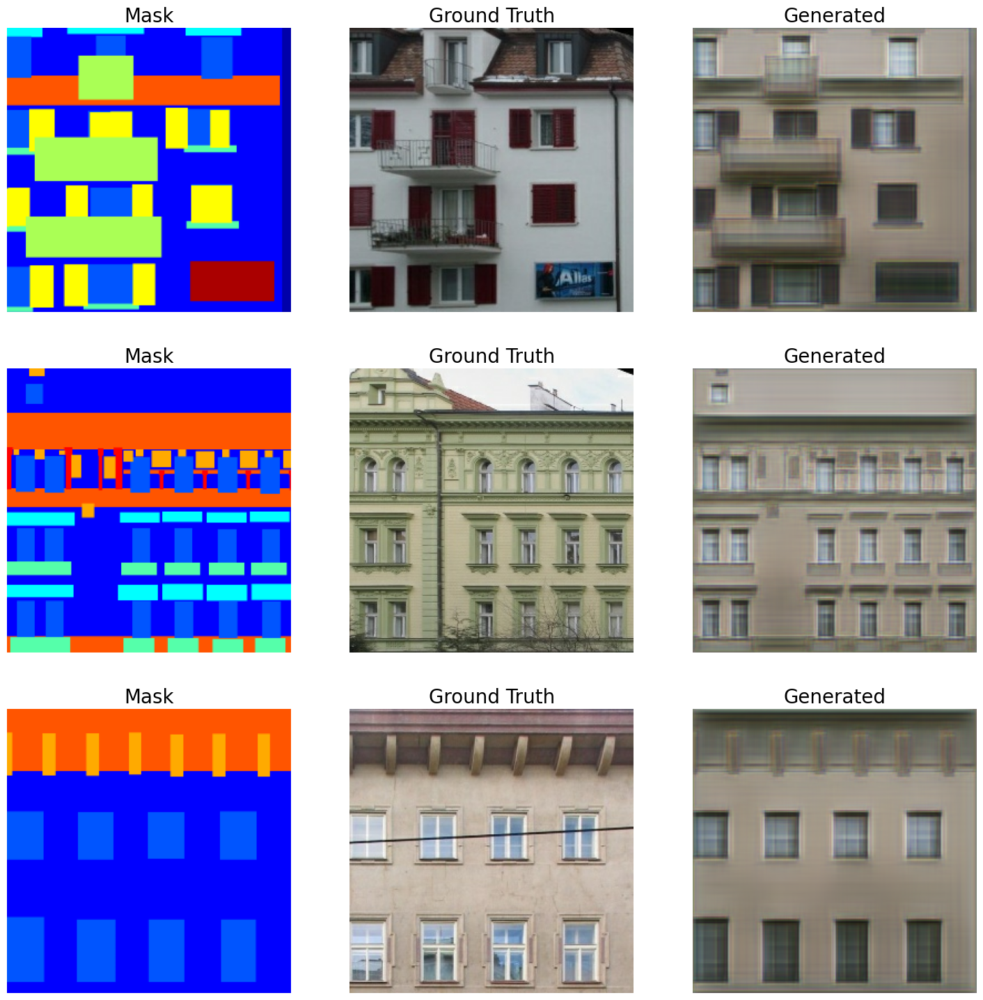


75/75 ━━━━━━━━━━━━━━━━━━━━ 114s 426ms/step - disc_loss: 1.3051 - feat_loss: 11.2902 - gen_loss: 113.0590 - kl_loss: 83.1493 - vgg_loss: 18.4890 - val_disc_loss: 1.0374 - val_feat_loss: 9.2344 - val_gen_loss: 110.1001 - val_kl_loss: 83.8935 - val_vgg_loss: 16.6412
Epoch 2/15
75/75 ━━━━━━━━━━━━━━━━━━━━ 14s 193ms/step - disc_loss: 0.8257 - feat_loss: 12.6603 - gen_loss: 115.9798 - kl_loss: 84.4545 - vgg_loss: 18.2973 - val_disc_loss: 0.9296 - val_feat_loss: 10.4162 - val_gen_loss: 110.6182 - val_kl_loss: 83.4473 - val_vgg_loss: 16.5499
Epoch 3/15
75/75 ━━━━━━━━━━━━━━━━━━━━ 15s 194ms/step - disc_loss: 0.9126 - feat_loss: 10.4992 - gen_loss: 111.6962 - kl_loss: 83.8692 - vgg_loss: 17.0433 - val_disc_loss: 0.8875 - val_feat_loss: 9.9899 - val_gen_loss: 111.4879 - val_kl_loss: 84.6905 - val_vgg_loss: 16.4510
Epoch 4/15
75/75 ━━━━━━━━━━━━━━━━━━━━ 15s 194ms/step - disc_loss: 0.8975 - feat_loss: 9.9081 - gen_loss: 111.2489 - kl_loss: 84.3098 - vgg_loss: 16.7369 - val_disc_loss: 0.9266 - val_feat_loss: 8.8318 - val_gen_loss: 107.9712 - val_kl_loss: 82.1354 - val_vgg_loss: 16.2676
Epoch 5/15
75/75 ━━━━━━━━━━━━━━━━━━━━ 15s 194ms/step - disc_loss: 0.9378 - feat_loss: 9.1914 - gen_loss: 110.5359 - kl_loss: 84.7988 - vgg_loss: 16.3160 - val_disc_loss: 1.0073 - val_feat_loss: 8.9351 - val_gen_loss: 109.2667 - val_kl_loss: 84.4920 - val_vgg_loss: 16.3844
Epoch 6/15
1/1 ━━━━━━━━━━━━━━━━━━━━ 0s 35ms/step


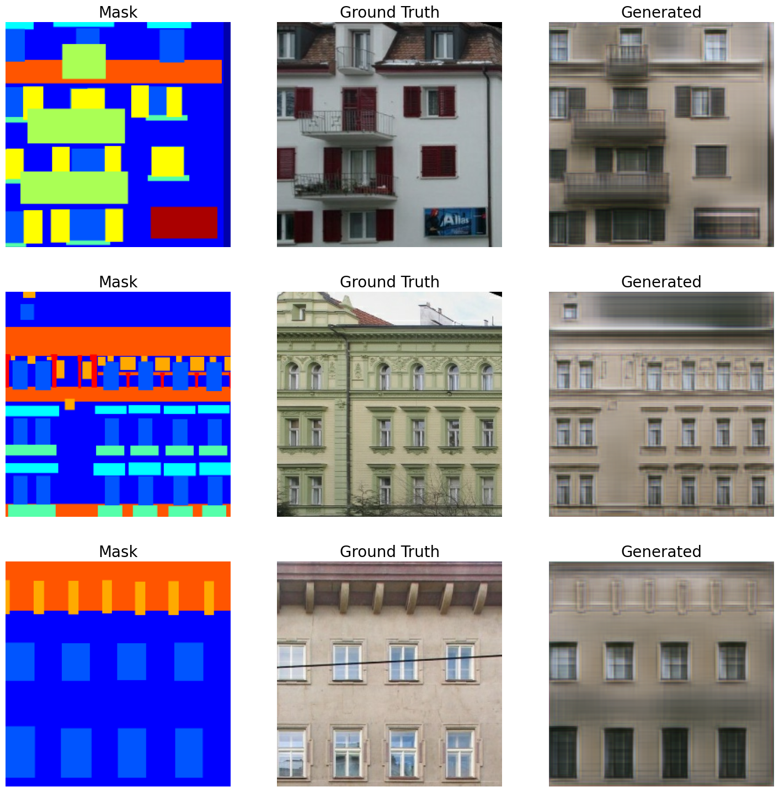

75/75 ━━━━━━━━━━━━━━━━━━━━ 19s 258ms/step - disc_loss: 0.8982 - feat_loss: 9.2486 - gen_loss: 109.9399 - kl_loss: 83.8095 - vgg_loss: 16.5587 - val_disc_loss: 0.8061 - val_feat_loss: 8.5935 - val_gen_loss: 109.5937 - val_kl_loss: 84.5844 - val_vgg_loss: 15.8794
Epoch 7/15
75/75 ━━━━━━━━━━━━━━━━━━━━ 15s 194ms/step - disc_loss: 0.9048 - feat_loss: 9.1064 - gen_loss: 109.3803 - kl_loss: 83.8245 - vgg_loss: 16.0975 - val_disc_loss: 1.0096 - val_feat_loss: 7.6335 - val_gen_loss: 108.2900 - val_kl_loss: 84.8679 - val_vgg_loss: 15.9580
Epoch 8/15
75/75 ━━━━━━━━━━━━━━━━━━━━ 15s 193ms/step - disc_loss: 0.9075 - feat_loss: 8.0537 - gen_loss: 108.1771 - kl_loss: 83.6673 - vgg_loss: 16.1545 - val_disc_loss: 1.0090 - val_feat_loss: 8.7077 - val_gen_loss: 109.2079 - val_kl_loss: 84.5022 - val_vgg_loss: 16.3814
Epoch 9/15
75/75 ━━━━━━━━━━━━━━━━━━━━ 15s 194ms/step - disc_loss: 0.9053 - feat_loss: 7.7949 - gen_loss: 107.9268 - kl_loss: 83.6504 - vgg_loss: 16.1193 - val_disc_loss: 1.0663 - val_feat_loss: 8.2042 - val_gen_loss: 108.4819 - val_kl_loss: 84.5961 - val_vgg_loss: 16.0834
Epoch 10/15
75/75 ━━━━━━━━━━━━━━━━━━━━ 15s 194ms/step - disc_loss: 0.8905 - feat_loss: 7.7652 - gen_loss: 108.3079 - kl_loss: 83.8574 - vgg_loss: 16.2992 - val_disc_loss: 0.8362 - val_feat_loss: 7.7127 - val_gen_loss: 108.9906 - val_kl_loss: 84.4822 - val_vgg_loss: 16.0521
Epoch 11/15
1/1 ━━━━━━━━━━━━━━━━━━━━ 0s 30ms/step


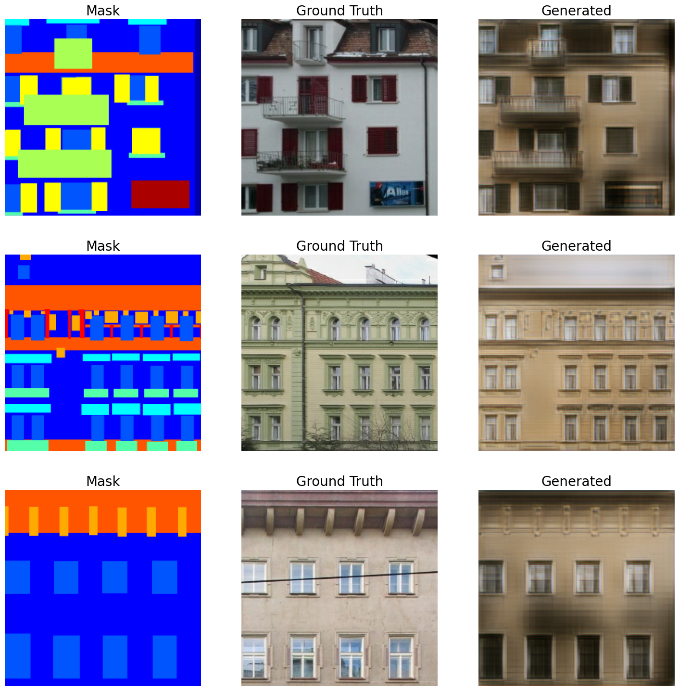

75/75 ━━━━━━━━━━━━━━━━━━━━ 20s 263ms/step - disc_loss: 0.9047 - feat_loss: 7.5019 - gen_loss: 107.6317 - kl_loss: 83.6812 - vgg_loss: 16.1292 - val_disc_loss: 0.8788 - val_feat_loss: 7.7651 - val_gen_loss: 109.1731 - val_kl_loss: 84.3094 - val_vgg_loss: 16.0356
Epoch 12/15
75/75 ━━━━━━━━━━━━━━━━━━━━ 15s 194ms/step - disc_loss: 0.8899 - feat_loss: 7.5799 - gen_loss: 108.2313 - kl_loss: 84.4031 - vgg_loss: 15.9665 - val_disc_loss: 0.8358 - val_feat_loss: 7.5676 - val_gen_loss: 109.5789 - val_kl_loss: 85.7282 - val_vgg_loss: 16.0442
Epoch 13/15
75/75 ━━━━━━━━━━━━━━━━━━━━ 15s 194ms/step - disc_loss: 0.8542 - feat_loss: 7.3362 - gen_loss: 107.4649 - kl_loss: 83.6942 - vgg_loss: 16.0675 - val_disc_loss: 1.0853 - val_feat_loss: 7.9020 - val_gen_loss: 106.9958 - val_kl_loss: 84.2610 - val_vgg_loss: 15.8510
Epoch 14/15
75/75 ━━━━━━━━━━━━━━━━━━━━ 15s 194ms/step - disc_loss: 0.8631 - feat_loss: 7.6403 - gen_loss: 108.6401 - kl_loss: 84.5304 - vgg_loss: 16.0426 - val_disc_loss: 0.9516 - val_feat_loss: 8.8795 - val_gen_loss: 108.5215 - val_kl_loss: 83.1849 - val_vgg_loss: 16.3289
Epoch 15/15
75/75 ━━━━━━━━━━━━━━━━━━━━ 15s 194ms/step - disc_loss: 0.8939 - feat_loss: 7.5489 - gen_loss: 108.8330 - kl_loss: 85.0358 - vgg_loss: 15.9147 - val_disc_loss: 0.9616 - val_feat_loss: 8.0080 - val_gen_loss: 108.1650 - val_kl_loss: 84.7754 - val_vgg_loss: 15.9561
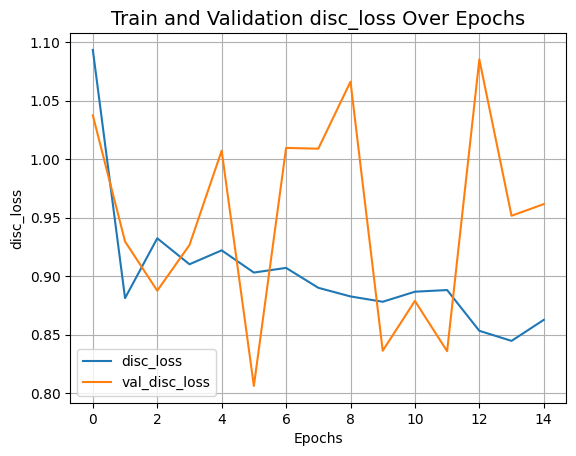
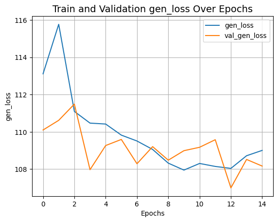
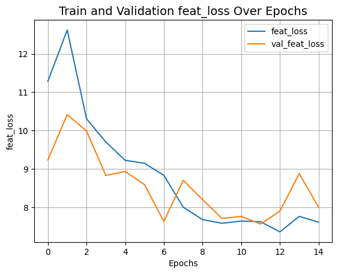
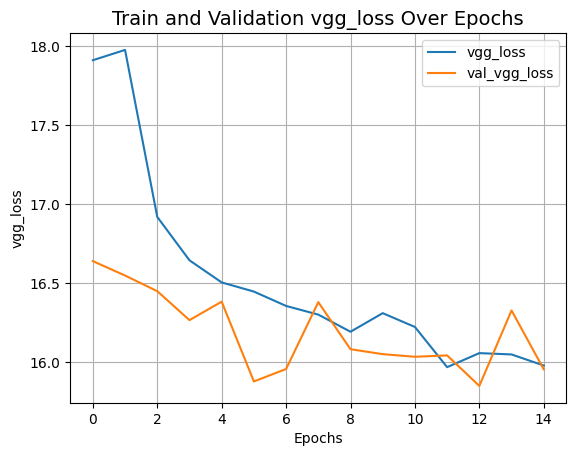
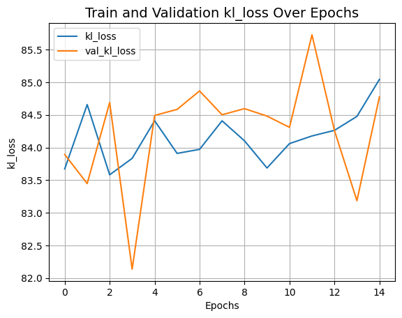
Inference
val_iterator = iter(val_dataset)
for _ in range(5):
val_images = next(val_iterator)
# Sample latent from a normal distribution.
latent_vector = keras.random.normal(
shape=(gaugan.batch_size, gaugan.latent_dim), mean=0.0, stddev=2.0
)
# Generate fake images.
fake_images = gaugan.predict([latent_vector, val_images[2]])
real_images = val_images
grid_row = min(fake_images.shape[0], 3)
grid_col = 3
f, axarr = plt.subplots(grid_row, grid_col, figsize=(grid_col * 6, grid_row * 6))
for row in range(grid_row):
ax = axarr if grid_row == 1 else axarr[row]
ax[0].imshow((real_images[0][row] + 1) / 2)
ax[0].axis("off")
ax[0].set_title("Mask", fontsize=20)
ax[1].imshow((real_images[1][row] + 1) / 2)
ax[1].axis("off")
ax[1].set_title("Ground Truth", fontsize=20)
ax[2].imshow((fake_images[row] + 1) / 2)
ax[2].axis("off")
ax[2].set_title("Generated", fontsize=20)
plt.show()
1/1 ━━━━━━━━━━━━━━━━━━━━ 0s 29ms/step
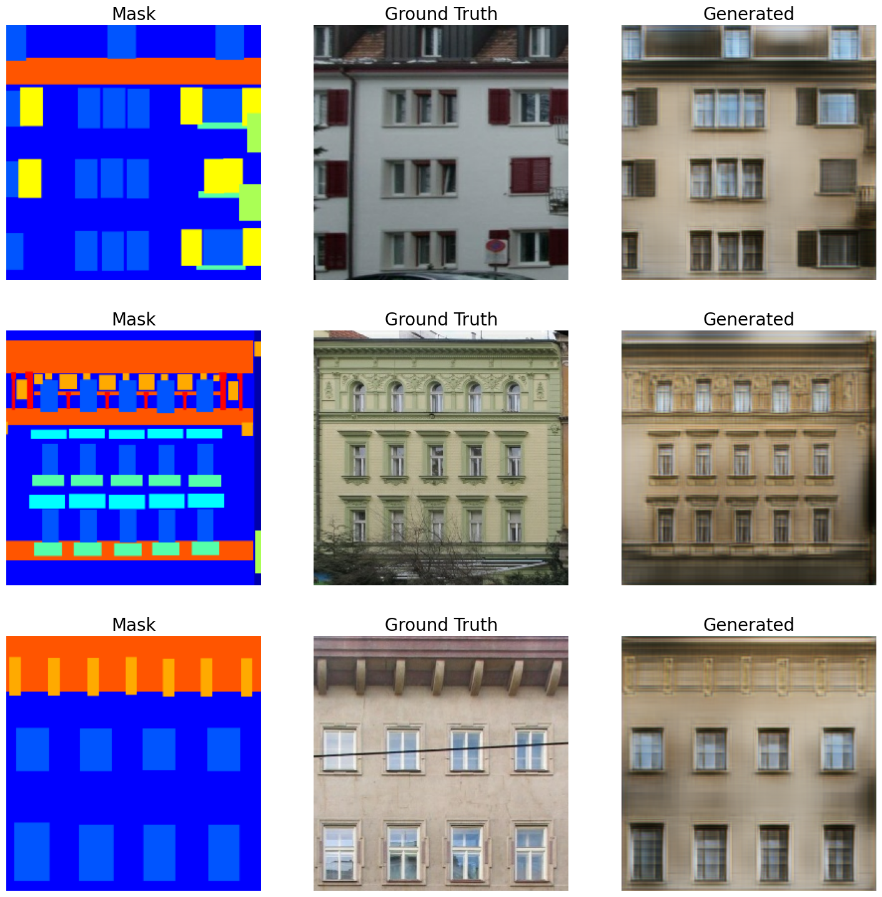
1/1 ━━━━━━━━━━━━━━━━━━━━ 0s 25ms/step
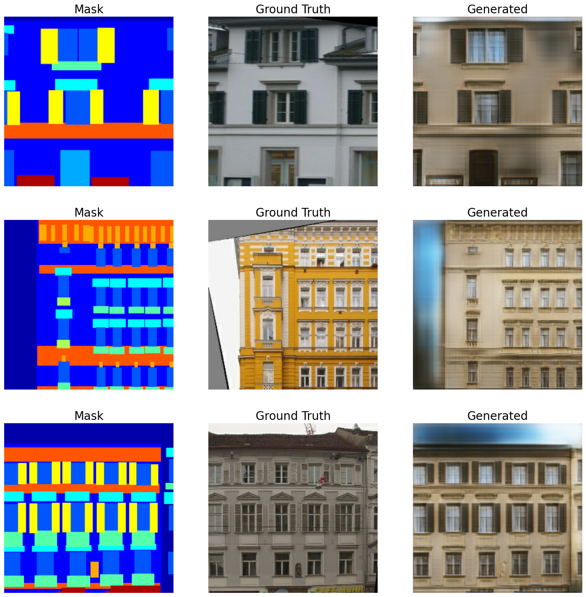
1/1 ━━━━━━━━━━━━━━━━━━━━ 0s 25ms/step
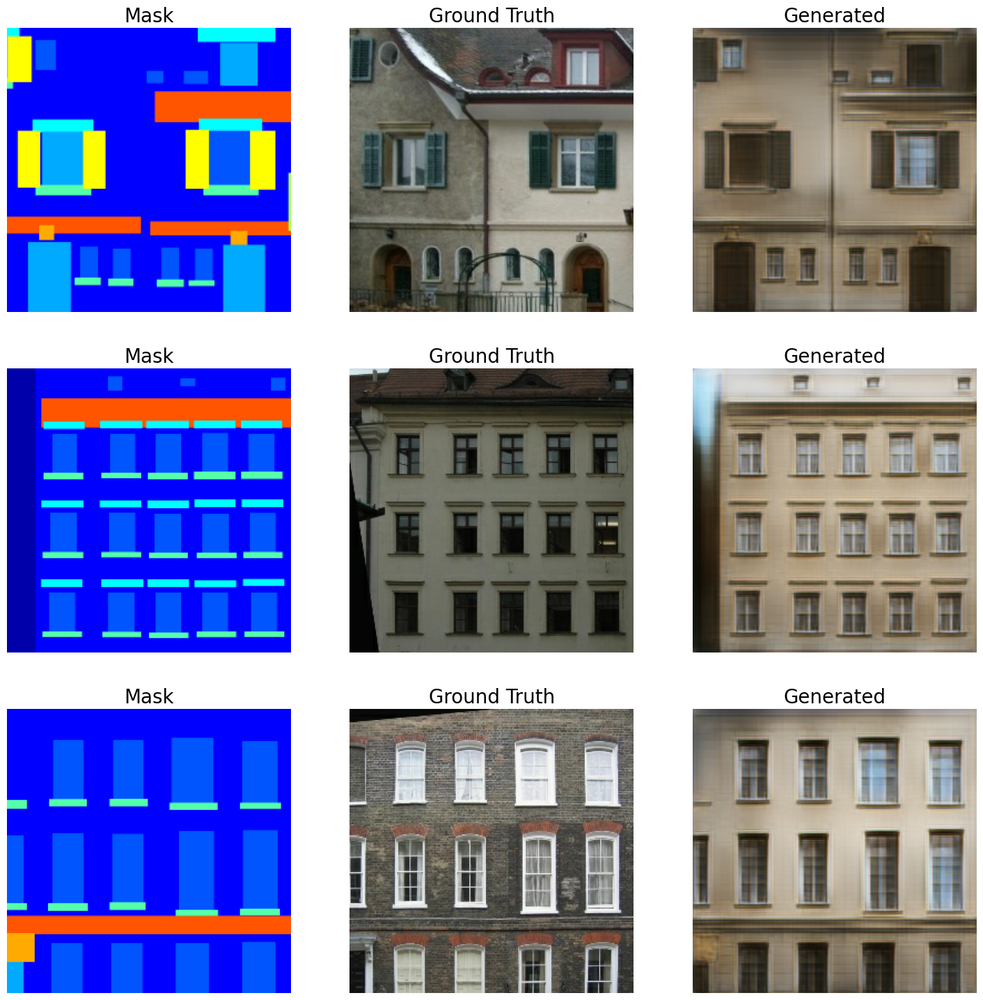
Final words
- The dataset we used in this example is a small one. For obtaining even better results we recommend to use a bigger dataset. GauGAN results were demonstrated with the COCO-Stuff and CityScapes datasets.
- This example was inspired the Chapter 6 of Hands-On Image Generation with TensorFlow by Soon-Yau Cheong and Implementing SPADE using fastai by Divyansh Jha.
- If you found this example interesting and exciting, you might want to check out our repository which we are currently building. It will include reimplementations of popular GANs and pretrained models. Our focus will be on readability and making the code as accessible as possible. Our plain is to first train our implementation of GauGAN (following the code of this example) on a bigger dataset and then make the repository public. We welcome contributions!
- Recently GauGAN2 was also released. You can check it out here.
Example available on HuggingFace.
| Trained Model | Demo |
|---|---|